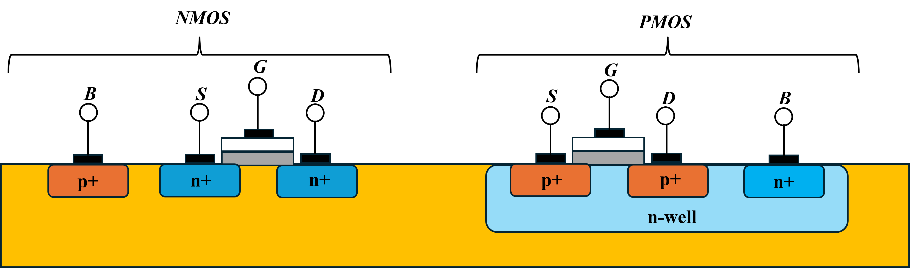
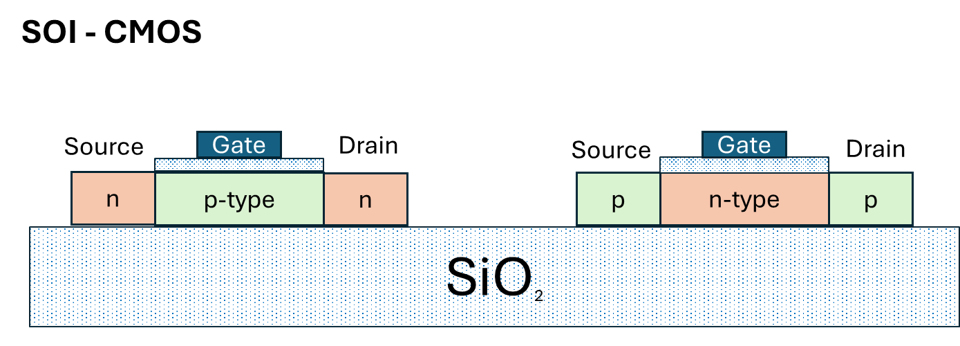

Electronics Components
Semicondutors
The most common elements employed in electronic.
CMOS (Complementary Metal-Oxide Semicondutor)
CMOS (Complementary Metal-Oxide-Semiconductor) is a technology used in digital electronics for designing integrated circuits (ICs). It employs complementary and symmetrical pairs of p-type and n-type MOSFETs to perform logic functions. Commonly used to construct IC chips—such as microprocessors, microcontrollers, and memory devices—CMOS largely replaced NMOS logic due to its lower power consumption and higher noise immunity. In figure 1 a general scheme about how CMOS technology works, puttin in evidence the logic behind the p-type and n-type transistors coupled.

There are different types of CMOS technology:
- Silicon On Insulator CMOS (SOI-CMOS) (figure 2)
- CMOS architecture for miniaturization (<16 nm):
- FinFET CMOS
- GAAFET/NanoSheet CMOS --> evolution of FinFET
- Bipolar CMOS (BiCMOS) (figure 3): the most sensitive to space radiation. This kind of CMOS put together the CMOS (low consumption and high density) with bipolar transistro BJT (high speed and capability to manage hoigh currents).


Interactive Radiation Effects Simulation
Total ionizing dose
0.0 krad
Holes trapped in oxide
Threshold shift
0 mV
NMOS Vth drifts negative
Displacement damage
0
Vacancy–interstitial pairs
Single events
0 SEU · 0 SEL
Charge in sensitive volume